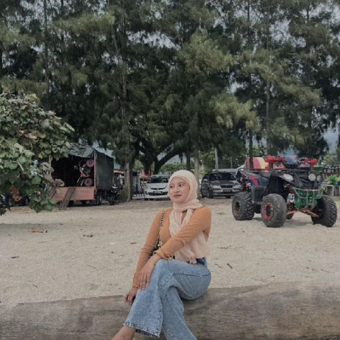

|  |
|---|
Good day, everyone! My name is Norfatin Atirah Binti Ariffuddin, and I'm 20 years old. I live in Subang Jaya with my mother and brothers. I am now a student at Universiti Teknologi MARA (UiTM) in Malaysia, continuing my academic career. When I'm not studying, you'll often find me with a book in my hand since I like reading in my spare time. It's my go-to method for unwinding and releasing tension. I find peace in the world of reading, where I may discover new worlds and learn new things by turning the pages of an enjoyable novel.
“Slow progress is better than no progress. Stay positive and never give up!”